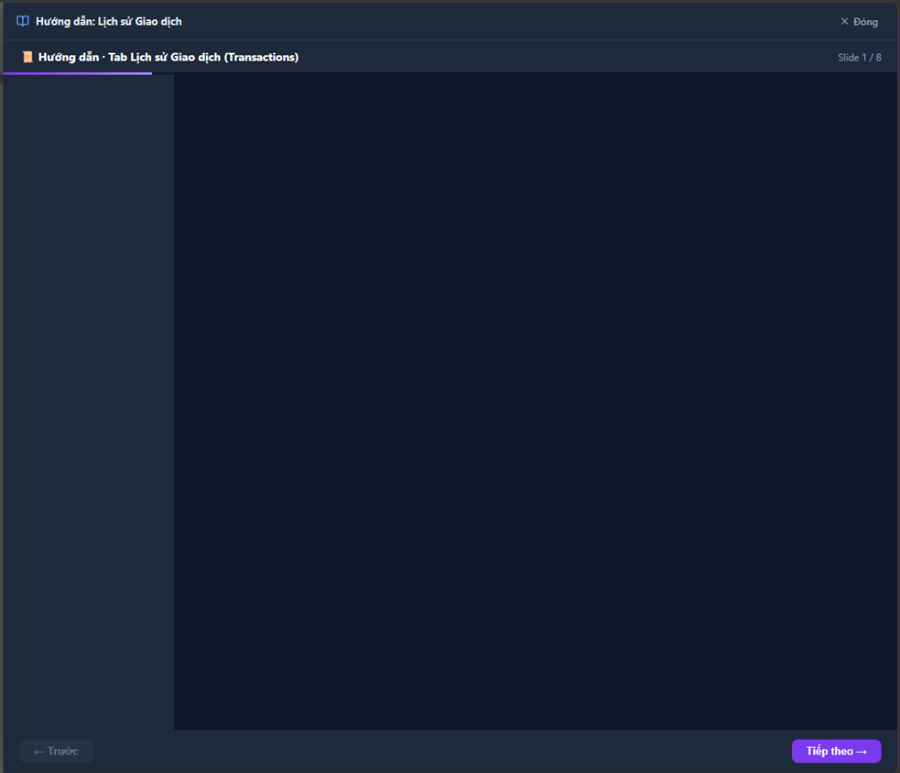
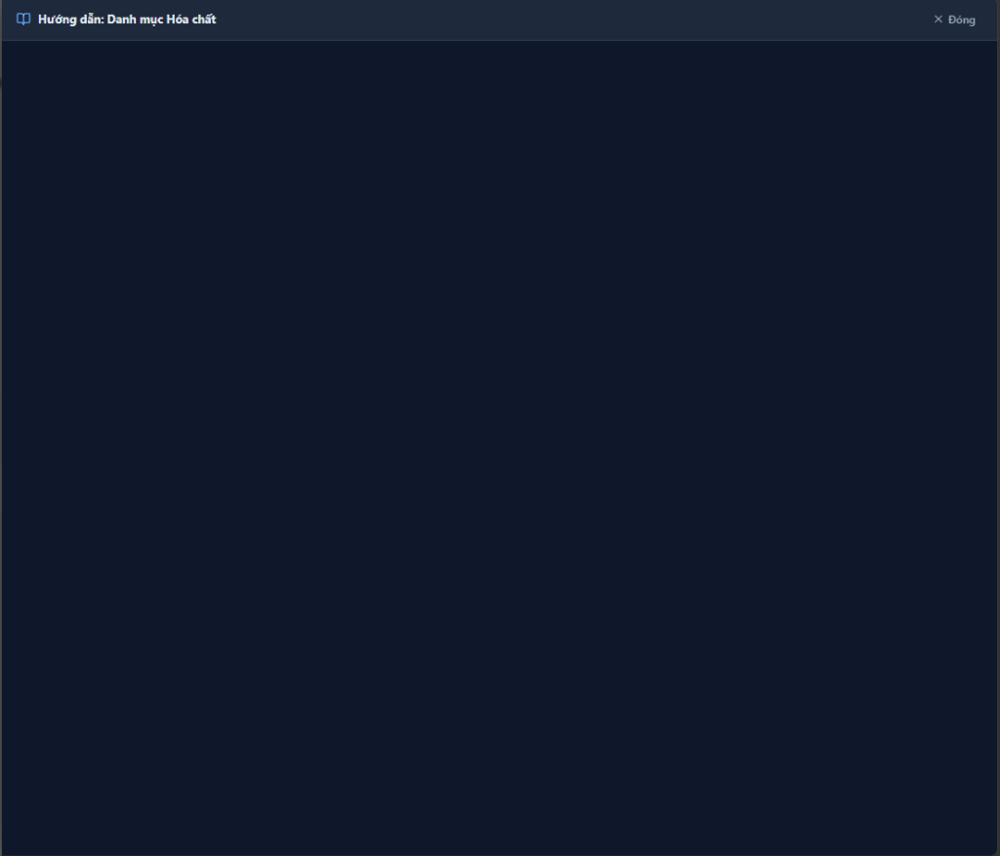
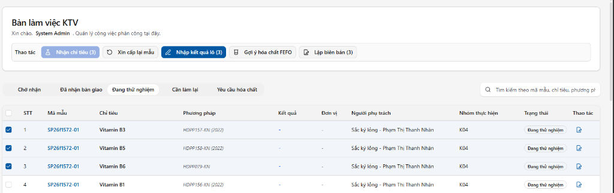
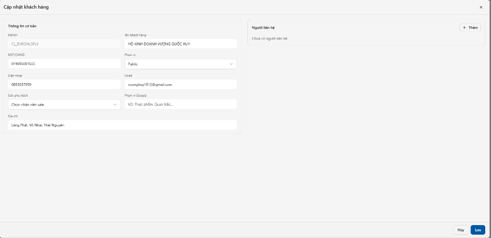

HƯỚNG DẪN SỬ DỤNG MODULE CRM
Tài liệu này hướng dẫn chi tiết cách nhân viên sử dụng module CRM để quản lý thông tin khách hàng, báo giá và đơn hàng trong hệ thống LIMS.
I. TỔNG QUAN GIAO DIỆN CRM
Module CRM đóng vai trò quản lý vòng đời sử dụng dịch vụ của khách hàng, được chia làm 3 chức năng chính tương ứng với 3 Tab:
- Khách hàng: Quản lý hồ sơ gốc của khách hàng bao gồm thông tin pháp nhân, thông tin liên lạc và lịch sử giao dịch.
- Đơn hàng: Quản lý quá trình xử lý đơn, theo dõi trạng thái phân tích và thanh toán của khách hàng.
- Báo giá: Quản lý các bản thảo báo giá gửi cho khách hàng, cho phép duyệt và chuyển tiếp thành đơn hàng thực tế.

Các công cụ chung trên giao diện
- Tìm kiếm nhanh: Tại ô tìm kiếm trên cùng của module CRM, bạn có thể gõ từ khoá để tìm kiếm nhanh ở mọi Tab.
- Tạo mới (Plus Button): Nút
+ Tạo mới luôn sẵn sàng ở góc phải để thêm dữ liệu tùy vào tab đang mở.
-
Bộ lọc động (Filter): Biểu tượng bộ lọc (phễu lọc) bên cạnh tiêu đề các cột (như Mã KH, Tên khách hàng, Trạng thái đơn) cho phép bạn lọc chính xác các bản ghi mong
muốn với tính năng đếm tổng số bản ghi (Count).
II. QUẢN LÝ KHÁCH HÀNG
Trang danh sách Khách hàng bao gồm các cột thông tin:
- Mã KH: Mã định danh duy nhất (VD: CL_BVRGHLGPLV) kèm nhãn phạm vi Sale phụ trách (Ví dụ: Public).
- Tên khách hàng: Tên gọi chính, email và số điện thoại giao dịch.
- MST/CMND: Mã số thuế (legalId) / CMT nhân dân của khách hàng.
- Tên xuất hóa đơn: Tên đơn vị trên hóa đơn (Tax Name) và mã số thuế tương ứng.
- Liên hệ chính: Hiển thị tên người liên hệ, nếu có nhiều người, hệ thống sẽ sử dụng biểu tượng gom nhóm.
- Thao tác: Các icon thao tác Mắt (Xem chi tiết), Bút (Chỉnh sửa) và Thùng rác (Xóa).
Xem chi tiết khách hàng
Nhấn vào biểu tượng Mắt ở cột Thao tác để mở hộp thoại thông tin chi tiết. Giao diện chi tiết được chia theo cụm:
- Thông tin cơ bản: Mã khách, Tên khách hàng, MST, Số điện thoại, Email liên hệ.
- Sale & Scope: Sale phụ trách (Tên và ID) và Phạm vi cung cấp dịch vụ (Scope).
- Thông tin hóa đơn: Mã số thuế, Tên doanh nghiệp/Người đại diện và Địa chỉ hóa đơn.
- Người liên hệ: Danh sách chi tiết của tất cả những đầu mối liên hệ (Họ tên, SĐT, Vị trí).
-
Đơn hàng & Báo giá: Hiển thị lịch sử tất cả các mã Đơn hàng (kèm tổng tiền, trạng thái) và Báo giá đã tạo cho khách hàng này. Giúp tổng hợp nhanh tình trạng doanh
thu.

III. QUẢN LÝ ĐƠN HÀNG (ORDERS)
Trang danh sách Đơn hàng bao gồm các cột thông tin:
- Mã đơn hàng: Định danh đơn.
- Mã báo giá: Báo giá liên kết ban đầu.
- Mã khách hàng: Liên kết tới khách hàng đặt dịch vụ.
- Tổng tiền: Tổng giá trị bao gồm thuế.
- Trạng thái đơn: Quá trình của đơn (Ví dụ:
pending, processing, completed).
- Trạng thái thanh toán: Tình trạng cước phí (Ví dụ:
Chưa thanh toán, unpaid, Paid).

Xem chi tiết đơn hàng
Khi nhấn Xem chi tiết đơn, bạn sẽ thấy thông tin trích xuất toàn vẹn:
- Thông tin chung: Khách, Mã Báo giá, Sale, Chiết khấu %, Người tạo, Thời gian.
-
Thông tin tiền: Hiển thị bảng kê chi tiết tài chính bao gồm:
- Tổng tiền niêm yết (Fee Before Tax and Discount)
- Chiết khấu, Tiền giảm giá (Discount Value)
- Tiền trước thuế (Fee Before Tax)
- Thuế suất %, Tiền thuế (Tax value)
- Tổng tiền (Total amount).
- Người liên hệ / Người gửi mẫu: Thông tin cá nhân giao dịch lấy mẫu.
-
Mẫu & Chỉ tiêu: Đây là phần quan trọng nhất, hiển thị mỗi hình thức mẫu (Tên mẫu, Loại mẫu, Nơi sản xuất) cùng với một bảng cấu trúc liệt kê toàn bộ các
Chỉ tiêu (Parameter) đã được chọn để xét nghiệm, đi kèm phương pháp thử nghiệm (Protocol) và giá trị Đơn giá/Thuế/Thành tiền của từng chỉ tiêu.

IV. QUẢN LÝ BÁO GIÁ (QUOTES)
Trang báo giá có thiết kế và giao diện tương tự như Đơn hàng với các cột: Mã báo giá, Mã khách hàng, Tổng tiền, Trạng thái báo giá.
1. Luồng xử lý Báo giá
- Các báo giá thường khởi tạo ở trạng thái Nháp (Draft).
- Khi thoả thuận xong và đồng ý thực hiện, ta sẽ chuyển báo giá từ Draft sang Approved (Đã chốt/Đã phản hồi).
- Báo giá Approved sẽ được dùng làm căn cứ tự động tạo dữ liệu Đơn hàng, giúp hạn chế sai sót và không cần nhập lại chỉ tiêu thử nghiệm.
2. Xem chi tiết Báo giá
Cũng như đơn hàng, modal chi tiết báo giá liệt kê mọi nội dung (bao gồm thông tin sale phụ trách, chiết khấu, khách hàng) với phần Mẫu và Chỉ tiêu chuyên sâu:
- Danh sách thể hiện trực quan các Mẫu (VD: Thực phẩm bảo vệ sức khỏe) và từng loại xét nghiệm sẽ thực hiện trong mẫu đó.
- Toàn bộ giá trị tài chính (tính thuế + chiết khấu trên từng dòng) được hệ thống tự động tổng hợp để ra tổng Bill cuối cùng gửi đến khách hàng.
V. CÁC LƯU Ý QUAN TRỌNG KHI SỬ DỤNG
-
Từ Báo giá đến Đơn hàng: Hãy tận dụng việc thiết lập cấu hình Mẫu & Chỉ tiêu ở bước Tạo Báo giá. Lúc lên Đơn hàng bạn chỉ việc chọn lại báo giá đó thì các
field sẽ fill tự động.
-
Kiểm tra Kỹ Thông Tin Hóa Đơn: Các thông tin MST và Tên đơn vị trên hóa đơn phải được xác nhận trước khi tiến hành thu cước và in lệnh, tránh việc nhầm hoá
đơn.
-
Tooltips: Khi hover chuột qua các nội dung gạch chân, hoặc các phần hiển thị bị thu gọn, hệ thống cung cấp Popover hiển thị các giá trị đầy đủ (ví dụ liên hệ
chính) mà không cần phải mở trực tiếp modal.